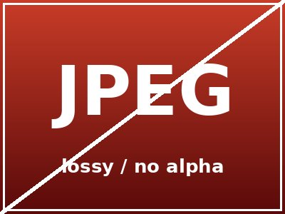
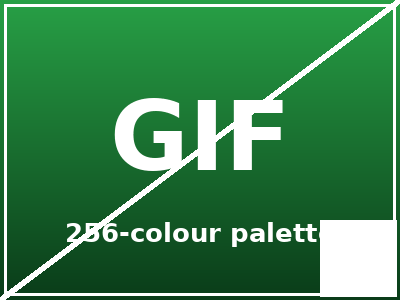

Each format below should render identically and show its name. The page background is a CSS checkerboard so transparent areas (PNG circle, GIF corner) reveal the pattern underneath.

assets/photo.jpg — lossy, no alphaassets/logo.png — RGBA, transparent circle
assets/sprite.gif — palette + transparent cornerassets/vector.svg — vectorassets/picture.webp — lossybackground-image — one per formatbackground-repeat — tiling a small imagebackground-size — cover vs contain (wide.jpg, 800×200)